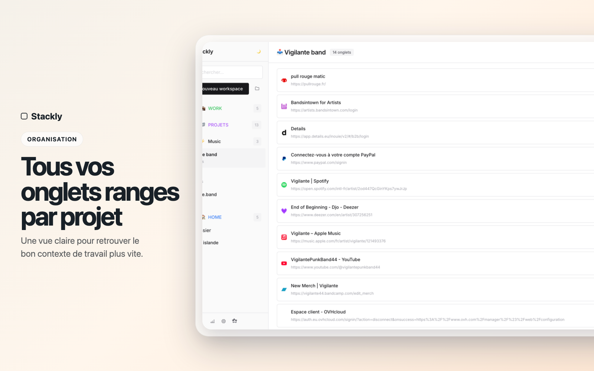
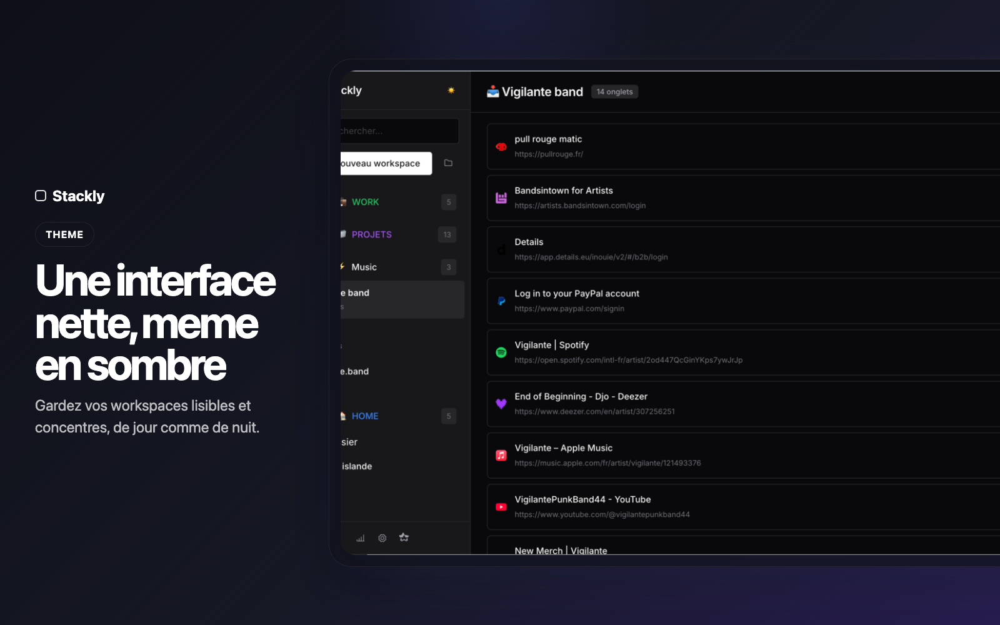
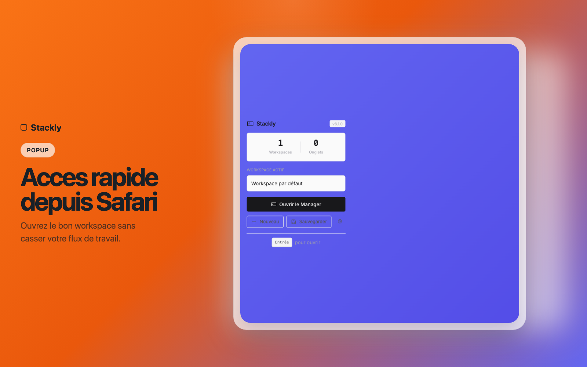

Un workspace par contexte
Travail, veille, perso, client : chaque sujet retrouve sa place.
Safari sur Mac
Stackly organise vos onglets par espaces de travail pour vous aider a passer d'un projet a l'autre sans perdre le fil.

Pourquoi Stackly
Quand tout reste melange dans une seule fenetre, chaque changement de sujet demande un effort inutile. Stackly vous aide a regrouper vos onglets par client, projet ou routine.
Travail, veille, perso, client : chaque sujet retrouve sa place.
Retrouvez le bon ensemble d'onglets au bon moment depuis la popup.
Gerez, triez et nettoyez vos onglets dans une interface dediee.
Pas de compte, pas de cloud impose, pas de tracking.
Fonctionnalites
Noms, couleurs et emojis pour identifier rapidement chaque espace.
Conservez vos contextes de navigation pour y revenir plus tard.
Recuperez ou transferez vos donnees avec un format JSON simple.
Une interface lisible qui s'adapte a votre usage quotidien.
Captures


Compatibilite
Stackly est disponible sur Safari via le Mac App Store. L'experience principale de gestion par workspaces est disponible sur macOS.
La suspension automatique des onglets reste une fonctionnalite propre a Chrome, car l'API correspondante n'existe pas sur Safari.
Lire la politique de confidentialiteTelechargement
Stackly est disponible sur le Mac App Store pour les utilisateurs Safari sur macOS.
Installer Stackly